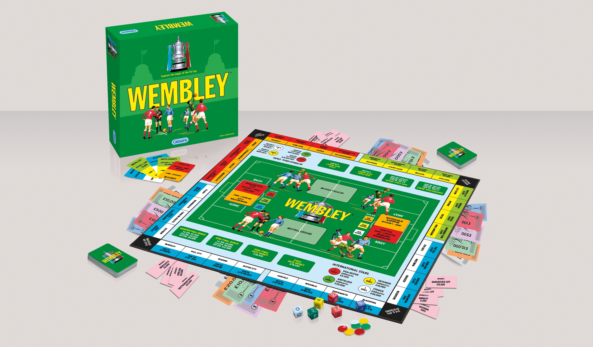
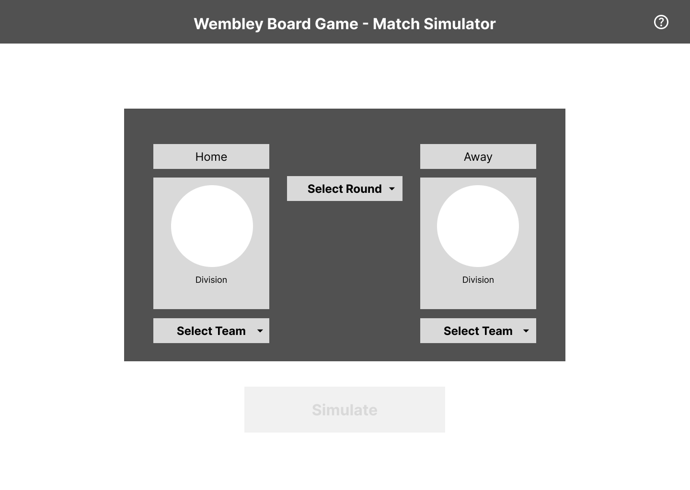
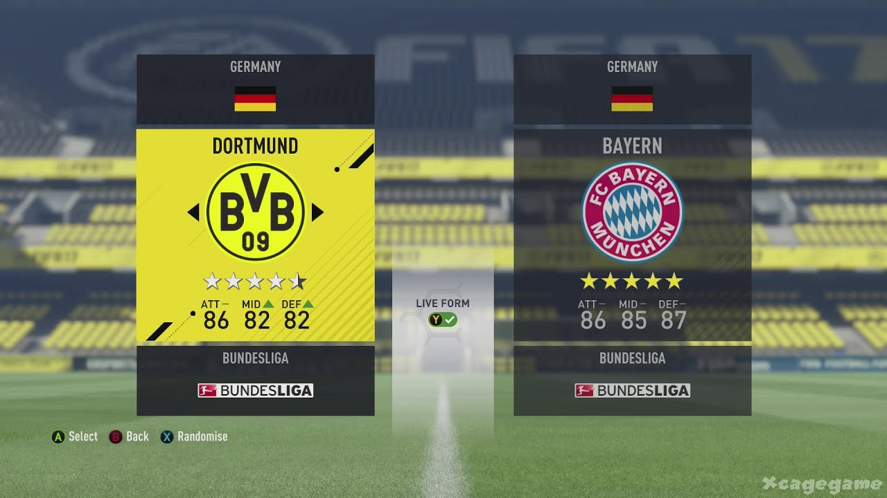
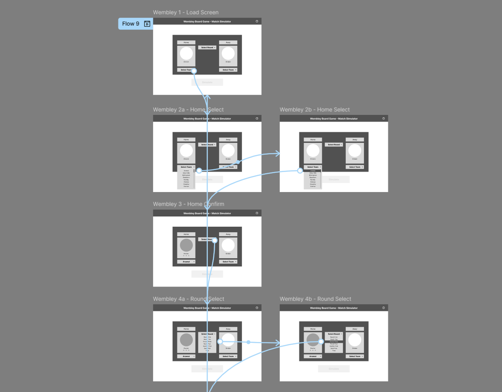
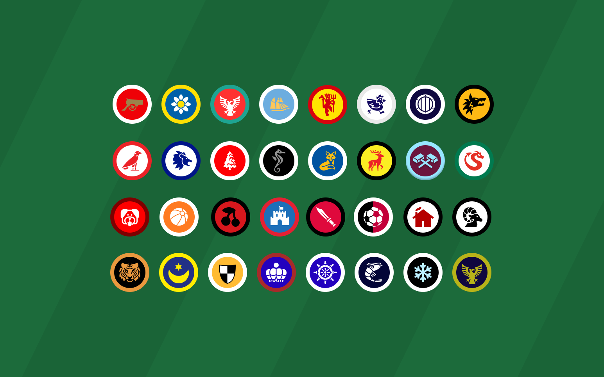
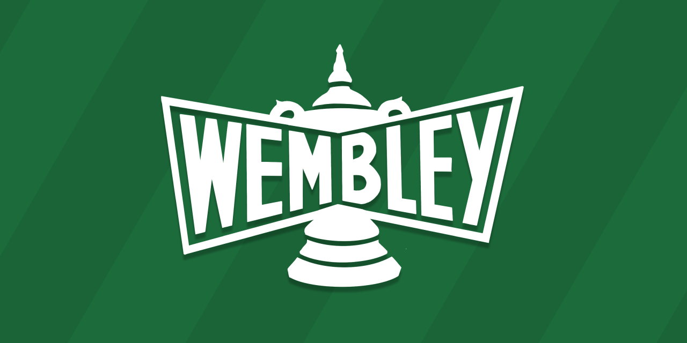

Bringing the Game to Life
The Wembley board game has been on kitchen tables since the 1970s. Playing it again as an adult — and then finding forums full of people asking for dice probabilities, rules half-remembered, ways to keep playing when the box was broken — made the problem clear. This is its digital companion: faithful to the original mechanics, freed from the box, and built from scratch by one person across design, product, and code.
Discovery
Around the table
Playing the game with others made the friction immediate. Prize money had to be physically handed out for gate receipts and match winnings. When a goal was scored, someone rolled three separate dice and added additional goals by hand. Every time things got exciting — a cup upset, a late equaliser — the game had to pause while someone totted up the numbers. "You've forgotten to add my goal." "Who owes who for the gate?" The game was good. The overhead was killing it.
Forum research
Searching online surfaced a consistent pattern: forums and review threads full of people asking for dice probabilities, requesting digital versions, and sharing workarounds for broken or incomplete sets. The demand for a faithful digital companion was real — it just didn't exist yet.
What the forums said
Just found the game and want to play it with the family at Christmas. I've lost the dice. I would like to recreate them so I can play, but I can't find them anywhere on the web.
Forum post — Board Game Geek
I picked up a copy of this classic in a charity shop — it's in great condition, but no rules. Can anyone point me in the direction of some?
Forum post — Board Game Geek
The dice are poorly weighted and it needs updating properly rather than just a reprint. And yet, I love it.
Review — Board Game Geek
Played with the right crowd this can become an incredibly fun experience with memorable stand-up-and-cheer moments. The theme gives it a real boost.
Review — Board Game Geek
The opportunity
Not a replacement — a companion. One that handles everything the physical game can't, and bridges two audiences at once: younger fans who consume sport digitally and might never have discovered the board game, and the generation who grew up with it but found the overhead getting in the way.
The logic, built in
Dice probabilities, prize money, scoring rules, and progression all handled automatically. No dice to roll, no cash to hand out, nothing to argue about.
The atmosphere
Chronologically: weighing up pre-match selections, waiting for the result, the tension of a penalty shootout if it ends in a draw. Not just a tool — an occasion that feels like the real thing.
Built to grow
New teams, new editions, rule variants. A Retro skin for older fans who remember a different version of the game; new digital skins for those who've never owned the box. Quality-of-life improvements the physical game never could.

Decisions that shaped it
1
Layout and information hierarchy
The wireframes started on paper before moving into Figma — mapping the user flow from load screen through team selection, round selection, and match play. These were the core features, and early testing focused on how players would find and select their team. The card format — two opposing team panels with badge, division, stadium, and Cup Heroes visible at a glance — came from studying the FIFA team select screen. That layout puts both sides in front of the player simultaneously, making the matchup feel like an event before a ball is kicked.



Design note
Football fans know the home team is always shown first (left) — but for a family board game with mixed audiences, more information was needed. Star ratings were introduced to help visualise divisions at a glance, giving casual players the same instinct a football fan already has.
2
The team select dropdown
The game has 32 teams. The question was how players should find theirs. Three options: scroll through a visual badge grid, a free-text search, or a dropdown list. The decision was a dropdown sorted alphabetically by team name. Players know who they support — the team name, not the league. FIFA scrolls through teams horizontally on a controller, which works at roughly 20 international sides. At 32 English clubs in a browser, that approach becomes slow and fatiguing. A searchable alphabetical dropdown gets players to their club in two taps, without needing to know which division they play in.
The decision
FIFA's L–R team scroll works for ~20 sides on a controller. At 32 clubs in a browser, it's too slow. A dropdown sorted by team name gets players to their club in two taps — because players know who they support, not what division they're in.
3
Moving the data out of the codebase
The app is built in vanilla HTML, CSS, and JavaScript — no frameworks, just the browser. In the first version, all 32 teams and their data (name, division, stadium, star rating, badge path) were hardcoded directly into a JavaScript object. It worked, but the file grew heavy, load times suffered, and any update to a team's data meant editing the application code. The fix was to move the full dataset to a Google Sheets spreadsheet, fetched on page load via the Sheets API. The JS file shrank significantly, load times improved, and team data can now be edited in a spreadsheet without touching a line of code.
The decision
Removing the hardcoded dataset meant any update — a new rating, a renamed club, adding a team — could be made in a spreadsheet without touching the application. The accepted trade-offs: a network request on every page load adds latency, and the app now depends on Google's API staying available. Mitigated by setting the Sheet to read-only, which removes the edit-access risk. For a project at this scale, the maintainability gain outweighs the dependency.


Testing
The original Wembley board game resolves drawn matches with a coin toss. Simple — but a penalty shootout is the most dramatic moment in football, and a coin flip felt like a missed opportunity. The decision to redesign it went through four iterations before it was right.

v1 — The trigger
The match report shows the draw after 90 minutes and a "Start Penalty Shoot Out" button — replacing the original coin toss rule entirely.

v2 — Live circles
Redesigned as a live sequence: two columns of five circles, one per kick, filling in progressively. A scoring bug was found and fixed during this build.

v3 — The problem
White circles for goals looked identical for both teams regardless of club colours. The information wasn't there to read the shootout at a glance.

v4 — Fixed
Team colours applied per circle, plus "Scored" and "Missed" labels added. Each kick now reads as a clear result — the version that shipped.
The detail
OPTA data suggests 80% of penalties are scored in professional football. Matching each kick to that same probability means all possible shootout outcomes — from 5–0 to sudden-death — are genuinely in play, rather than penalties feeling like a formality or reusing predetermined patterns.
Nice touches
Cup Heroes
The original board game had nameless coloured tokens — a green one for a striker, a yellow one for a defender. Each one guaranteed to deliver. The redesign gave them names, faces, and doubt.
From tokens to characters
In the physical game, International Stars were guaranteed: if you played a star striker, they added a goal, every time. That certainty was also the problem — in a game with star-heavy teams, you could guarantee a 3-goal advantage before a die was rolled, which broke the balance entirely. The digital redesign kept the token concept but introduced probability and personality. Now you choose Ashley Cole when you need a serial winner at the back. You pick Steven Gerrard for the big moments. Still a token mechanic — but one with stakes, character, and a reason to care about who you select. Each player is individually illustrated in a hand-drawn Roy of the Rovers comic style.
Role differentiation
Strikers add goals. Goalkeepers and defenders reduce the opposition's score instead — more faithful to how those positions actually affect a match.
80% probability
The original stars were guaranteed — which let heavy-star teams dominate by design. 80% gives enough assurance that the selection matters, while keeping football's fundamental truth: anything can happen.
Hidden secondary bonuses
Additional effects tied to specific players — not listed upfront. Discovered through play. 5 live now, 12 planned to match the physical token count.
In developmentHow discovery works
Secondary bonuses aren't listed in the UI — they're found by playing. Didier Drogba has a 100% chance to score whenever he plays at Wembley, referencing his 4 goals in 4 finals. You don't know that when you pick him. You find out when the unique score event appears. Dave Beasant saves a penalty for an underdog team at Wembley. Steven Gerrard has a 20% chance to save his team from a loss. Ashley Cole's secondary is a guaranteed contribution — dependable, as advertised. Each bonus is grounded in the player's real Wembley history, which means discovering them feels like recognition rather than reward.
UI — Badges, Skins & Logo
Three visual decisions that give the app its identity — each one rooted in the history of the game rather than designed from scratch.
Club Badges
All 32 teams from the 2016 Gibsons edition are represented with custom-designed badges. Now when Arsenal draw Man Utd in the semi-final, the badges and colours make it real and evoke memories of their legendary rivalry. Testing confirmed it: the badges aren't licensed but were the first thing players commented on.
Badge icons sourced using components from game-icons.net

Skins
Two skins built for two audiences: the Classic 2016 skin uses a green pitch background faithful to the board game's palette to feel like an extension of the physical box. The Sky skin is dark blue with red accents, inspired by spending Saturday afternoons in the 2000s watching your team's fortunes via the vidiprinter.
Logo
The later Gibsons edition logo had the right character — the FA Cup trophy rendered in intricate crosshatched detail, the lettering feeling genuinely considered. The redesign for the web release used that as its reference: a badge format with the trophy overlapping the wordmark, bold type, a pennant framing the lettering. More detail than a flat modern logo, more web-appropriate than scanning the box art.

Heard from players
I haven't played this since I was a kid. Finding this felt like finding the game again.
The badges make it. You forget it's a simulation — you're watching Chelsea vs Man City in the semi-final and it actually matters.
We used to play this on Christmas Day. Now we can again, even without the box.
Looking back
↩
More iteration on the setup screen
The setup screen is the first impression of the app. I had strong reference material — FIFA kick-off screens, TV highlights shows — but went straight into a layout without enough early exploration. That screen deserved more time. It's the moment before the game starts and it should feel like one.
↩
Establish structure before visual richness
I went deep into the colour palette and image-based backgrounds before the UI structure was stable. It looked good early, but made changes harder to make later. I'd lock the layout and mechanics first, then add visual richness once the structure was solid.
↩
Simplify the Cup Heroes system earlier
The Cup Heroes UI evolved significantly through the build — slot logic, how players are selected, how effects are communicated. Simplifying that system earlier in the process would have made it faster to iterate on. The final version is cleaner, but getting there took longer than it needed to.
What's next
Run your own FA Cup. No board required — just the game you remember.
Play Wembley